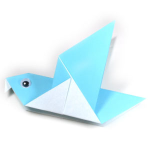
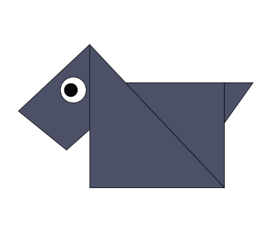
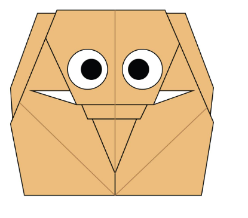
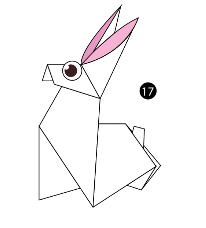
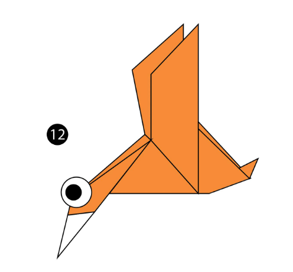

Chameleon
Intersting facts about chameleon
- Chameleons are that are part of iguana suborder
- Changing skin colour it is important part of communication among Chameleons
- Most Chameleons have prehistric tail to catch up the tree branches

Pigeon
Intersting facts about pigeon
- Pigeons are incredibly complax and intelligent
- Pigeons are renwed for their intelligent navigation
- Pigeons have excellent hearing abilites

Panda
Intersting facts about panda
- A giant panda is much bigger than your teddy bear.
- Giant pandas are good at climbing trees and can also swim
- Pandas are "lazy" — eating and sleeping make their day

Camel
Intersting facts about camel
- Camels have three sets of eyelids and two rows of eyelashes to keep sand out of their eyes.
- There are two types of camels: One humped or “dromedary” camels and two humped Bactrian camels.
- Camels have thick lips which let them forage for thorny plants other animals can't eat.

Cicada
Intersting facts about cicada
- Cicadas are oval-shaped, winged insects that provide a buzzing and clicking song heard in nature throughout the summer.
- Cicadas can live a relatively long time: 4 to 17 years, depending on whether they are annual or periodical cicadas
- There are generally two types of cicadas.

Teddy Bear
Intersting facts about teddy
- The teddy was named after President Theodore Roosevelt, after he refused to shoot a bear during a 1902 hunting trip..
- nspired by a cartoon featuring the event, shopkeeper Morris Michtom and his wife Rose made a stuffed bear with a sign 'Teddy's bear' and left
- A teddy bear is a stuffed toy in the form of a bear.
>
Dog
Intersting facts about dog
- Dogs noses are wet to help absorb scent chemicals
- A Bloodhound's sense of smell can be used as evidence in court
- The Beatles song 'A Day in the Life' has a frequency only dogs can hear
>
Elephant
Intersting facts about elephant
- They're the world's largest land animal.
- Elephants are constantly eating.
- Their trunks have mad skills
>
Rabbit
Intersting facts about rabbit
- A baby rabbit is called a kit, a female is called a doe and a male is called a buck.
- Rabbits perform an athletic leap, known as a 'binky', when they're happy — performing twists and kicks in mid air!
- Rabbits are very social creatures that live in groups.A rabbit's teeth never stop growing!
>
Duck
Intersting facts about duck
- Ducks are mostly aquatic birds living in both fresh water and sea water and found on every continent except for Antarctica.
- The duck is a number of species in the Anatidae family of birds
- A male duck is called a drake, a female duck a hen, and a baby duck a duckling.